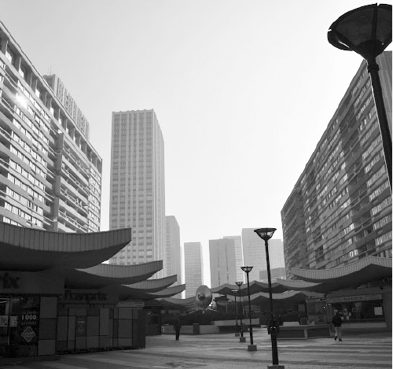
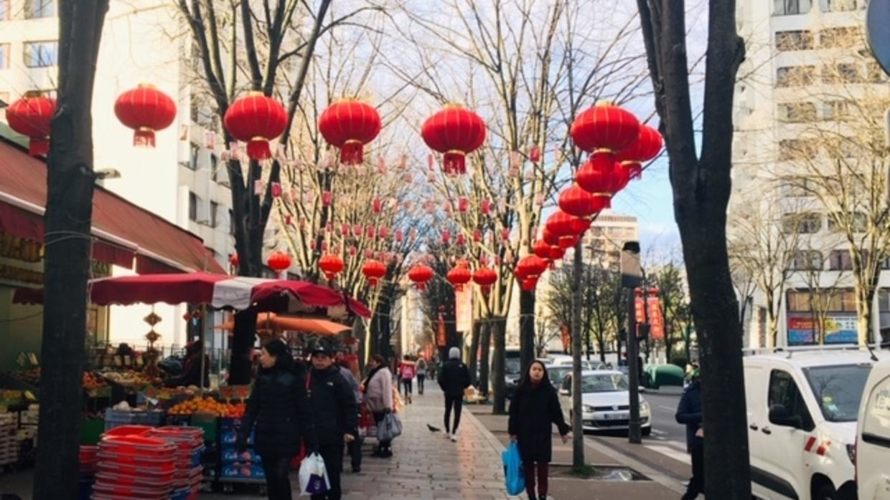

Ở bất kỳ thành phố lớn nào của châu Âu [hay trên thế giới], luôn có ít nhất một con phố, những con phố hay nhiều hơn là một quận tập trung những người châu Á. Vẫn là kiến trúc giống như tổng thể thành phố nhưng mang tâm hồn, nét văn hóa rất riêng của người châu Á. Người châu Á có nhiều đặc điểm, nhưng theo tôi cái khiến cho nó tách biệt khỏi văn hóa châu Âu, châu Phi, Ả rập… là hai đặc điểm: văn hóa ẩm thực và lối sống thích tụ tập, theo kiểu “buôn có bạn, bán có phường”. Vì thế mà trong các khu châu Á, mật độ người ở luôn cao hơn hẳn những khu khác, luôn có rất nhiều chợ và đặc biệt rất nhiều nhà hàng, tiệm ăn.
Và như một lẽ hiển nhiên, nếu bạn là người châu Á, khi đặt chân đến Paris, bạn sẽ tò mò muốn đến thăm nơi này, hoặc nhu cầu ẩm thực của bạn sẽ khiến bạn không thể không tìm kiếm xem chỗ nào ta có thể ngồi ăn một bát phở, một đĩa bún chả hay mấy cái nem.
Quận 13 của những người châu Á

Quận 13. (Ảnh: Tác giả)
Không rõ có phải vì Pháp từng là mẫu quốc của nhiều quốc gia châu Á, nên văn hóa của người Pháp gần gũi với người châu Á hơn rất nhiều nước châu Âu khác. Người châu Á nói chung và người Việt nói riêng ở Pháp, ở Paris đặc biệt đông. Trong 20 quận của Paris, người châu Á ở khắp nơi nhưng đặc biệt tập trung ở Quận 13, một trong những quận có diện tích lớn nhất và nhiều dân cư nhất Paris.
Điều nổi bật của quận này là những khu nhà cao hàng chục tầng (điều ít gặp trong nội thành Paris vì thành phố từ rất lâu đã hạn chế xây những khu nhà cao tầng trong nội thành nhằm không phá vỡ nét kiến trúc cổ đặc trưng), là những siêu thị thực phẩm rất rộng, nơi bạn có thể mua từ cái tăm tre đến bao gạo, từ đồ vàng mã đến những loại rau quả rất đặc trưng của Việt Nam hay châu Á. Và thêm nữa là những dãy phố nối dài đầy ắp những nhà hàng tiệm ăn đủ loại, lớn có, nhỏ có, sang trọng có, bình dân có. Không có quán rong vỉa hè như ở Việt Nam, nhưng có rất nhiều quán cũng cho phép người ăn ngồi ngay trên vỉa hè, dĩ nhiên chỉ khác là không có rác vứt bừa bãi thôi.
Quận 13 đặc biệt gần như không có thắng cảnh gì (khác biệt với tất cả những quận khác của Paris), chỉ có người và người, nhà (hàng) và nhà (hàng). Nhưng chuyện về Quận 13 của tôi thì nhiều, nếu có thời gian kể, có lẽ vài buổi tối mới hết được những câu chuyện này.
Quận 13 có thời gian giống như một quận đặc biệt “loạn” của Paris với những băng đảng kiểu Mafia, những nhóm đầu gấu không sợ pháp luật, những cuộc đấu súng ban đêm (hay cả ban ngày). Đến nỗi đã có cả một bộ phim viễn tưởng khá nổi tiếng ở Pháp được làm với viễn cảnh Quận 13 trở thành một quốc gia tự trị, độc lập, một vương quốc ngoài vòng pháp luật ở giữa Paris. Tuy nhiên, sau nhiều năm với sự nỗ lực của hệ thống pháp luật và của chính phủ, Quận 13 đã dần đi vào khuôn phép và trở nên an toàn, yên bình với người dân như bất cứ quận nào khác của Paris.
Rằng Quận 13 rất đông người Trung Quốc, và không ai biết được, thống kê được chính thức có bao nhiêu người Trung Quốc. Bởi nhiều người trong số họ không có giấy tờ, không có kê khai chính thức. Trẻ em sinh ra cũng không được thông báo, người chết đi cũng không có thông báo và nhiều khi người ta lấy giấy tờ của người chết để dùng cho một người còn sống nhưng chưa có giấy tờ.
Sau cộng đồng người Hoa là đến cộng đồng người Việt, phần lớn là người miền Nam, đến Pháp theo hai làn sóng di cư lớn những năm 1954 và 1975.
Cũng vì sự vượt trội của cộng đồng người Hoa và người Việt ở Quận 13 mà đến đây, bạn rất dễ gặp những người nói được (dù có thể chỉ là bồi) cả tiếng Trung và tiếng Việt, dù cho họ là người Hoa, người Việt hay người Lào, Thái, Campuchia bởi hai ngôn ngữ ấy là thứ đảm bảo cho bạn dễ dàng kiếm được một công việc nơi đây.

.Với những người đến Paris theo “làn sóng” thứ ba, tất nhiên là ít hơn rất nhiều so với hai “làn” trước đó là những du học sinh như tôi (hầu hết đến từ Hà Nội và các vùng lân cận) thì trong một thời gian dài (ít nhất là đến trước khoảng năm 2002, 2003, trước khi có phong trào du học sinh sang Pháp ồ ạt nhờ chính sách nới lỏng cho du học sinh Việt Nam của chính phủ Pháp trong vòng vài năm), việc vào Quận 13 mà nói giọng Bắc là điều chẳng hay ho gì. Phần lớn dân di cư những năm 1975 đều không ưa gì những người giọng Bắc, đặc biệt những người đến từ Hà Nội.
Khổ một nỗi, người châu Á mình đi đâu rồi cũng phải nấu nướng và ăn các món cổ truyền mà nguyên liệu đầy đủ chỉ có thể tìm thấy trong các chợ châu Á. Thế nên sinh viên Việt Nam đến Paris, chỉ gắng gượng được một tuần là bắt đầu hỏi nhau về Quận 13, bắt đầu lọ mọ đi chợ, xem giá. Đứa nào cũng trợn mắt lên khi thấy một bó hành giá gần trăm ngàn nếu tính ra tiền Việt. Tiếng Pháp chưa rành, mà tiếng Việt nói ra chưa chắc người ta có hiểu hay không, nên chúng tôi đứa nào cũng chỉ trỏ, khua chân múa tay loạn xạ. Muốn mua cánh gà thì vẫy vẫy hai tay, muốn mua đùi lợn thì co chân lên đạp đạp. Nghĩ lại vẫn thấy buồn cười!
Thêm nữa, với những sinh viên nghèo như tôi, việc đầu tiên khi sang Pháp là tìm việc làm thêm bên cạnh việc đi học. Và với một người không biết tiếng Pháp như tôi khi ấy, chỉ có thể tìm được việc ở Quận 13, trong những tiệm ăn mà chủ quán và phần lớn nhân viên đều nói tiếng Việt. Nhưng dường như tất cả bọn họ đều không ưa gì những sinh viên Việt như tôi.
Nếu bạn còn nhớ, ở chương 1 tôi đã kể, tôi đến Paris với 500 đô-la. Ngay tuần đầu tiên tôi đã chi hơn 200 đô-la cho chuyến taxi lừa đảo, cho vé tàu, tiền bảo hiểm, ăn uống và tiền mua sắm một số dụng cụ học tập. Sau ba ngày ở nhờ bạn, chưa tìm được nhà để thuê, tôi cùng cậu bạn bắt buộc phải thuê một phòng trọ (lẽ ra chỉ dành cho một người) với giá 420 đô-la/tháng. Tính cả tiền ăn, nếu có tằn tiện lắm tôi chắc mình cũng chỉ cầm cự nổi một tháng. Vậy là ngay tuần thứ hai đặt chân đến Pháp tôi đã lao đi tìm việc làm.
Và Quận 13 “cực nhọc” của riêng tôi
Một người bạn giới thiệu tôi vào làm phụ bếp cho một nhà hàng Việt.
Ở đây, phụ bếp có nghĩa là làm tất cả. Là đến sớm đi chợ, còng lưng đẩy một xe hàng to. Là dọn dẹp lau chùi, là thái thịt rửa rau, là lau nhà cọ bếp, là quay cuồng giữa một đống bếp ga bốc lửa hừng hực, xào nấu những món đơn giản, trong khi mắt còn trông chừng nước sôi, chảo nem quá lửa và nhất là rửa bát, chao ôi là rửa bát. Không phải vì tôi là gã công tử chưa biết mùi lao động hay không quen rửa bát. Tôi từng là kẻ quậy phá trong suốt một thời gian dài. Nhưng trong chính thời gian đó hay bất kỳ lúc nào khác, khi ở nhà, tôi là một “thiên thần” theo cách gọi “mỉa mai” của mấy cậu bạn tôi. Dù là con trai nhưng ở nhà tôi tự giác nấu cơm rửa bát, dọn dẹp nhà cửa không cần ai thúc giục. Bởi từ bé mẹ tôi đã bảo “con trai con gái đều phải ăn thì đều phải làm như nhau, công việc chia đều, cái gì cũng phải biết”. Bởi chị tôi thì bận học, rồi đi dạy thêm kiếm tiền phụ giúp gia đình, ba mẹ đi làm về cũng đi làm thêm, tôi bỗng dưng thành người nấu cơm rửa bát thường xuyên trong nhà. Có thời gian nhà tôi ở tầng cao không có nước, ngày nào tôi cũng gánh cả chục gánh nước cho cả nhà sinh hoạt nên tôi quen với những việc này lắm, kể cả những việc nặng nhọc. Và tôi là người có sức khỏe, chơi thể thao thường xuyên ở mức độ gần như chuyên nghiệp.
Ấy thế mà làm việc ở nhà hàng ấy chỉ một thời gian ngắn tôi đã thấy mình kiệt sức. Một ngày lao động 14 tiếng gần như không nghỉ. Thật ra trên hợp đồng thỏa thuận bằng miệng thì có hai tiếng nghỉ trưa. Nhưng không có trưa nào mà bà chủ không nghĩ ra việc cho tôi làm. Có hôm thì mang cả đống nồi ra đánh cho trắng bóng lên, có hôm thì bắc ghế lau trần nhà. Những việc ấy sau này tôi mới biết là cả chục năm rồi không có phụ bếp nào chịu làm, chỉ có thằng “Việt cộng” tôi là bị bắt phải làm. Bởi vì tôi đi làm theo kiểu làm chui, không có giấy tờ (ở Pháp, sinh viên nước ngoài được quyền đi làm, nhưng không quá 20 tiếng một tuần. Nếu muốn làm hơn thì chỉ có cách làm chui, không có hợp đồng gì cả, và nếu bị bắt thì rất phiền hà, có thể năm sau đó không được ở lại Pháp nữa) và vì tôi cần tiền quá, làm việc hết mình mà chỉ lo nhất bị chủ đuổi, nên bà bắt làm gì tôi cũng lao vào làm như thiêu thân.
Trong cái bếp bé chừng bảy mét vuông ấy, mùa đông cũng như mùa hè, lúc nào cũng nóng đến 40 độ, vì phòng bé, trần thấp, hai bếp chính, một bếp phụ và sáu cái bếp ga thi nhau tỏa nhiệt. Có một cái cửa sổ nhưng không dám mở vì sợ khói bay sang nhà hàng xóm. Nóng đến nỗi, cứ 15 phút tôi lại phải nhúng cả nửa người vào vòi nước, thế mà 15 phút sau người đã khô cong, quần áo khô đến mức cứng lại như giấy. Cả buổi tối phục vụ xào nấu, bát đĩa khách ăn cho vào các thùng nhựa lớn. Thỉnh thoảng tôi mới có thời gian rửa một thùng để lấy bát đĩa quay vòng. Cuối buổi là cả chồng thùng chất cao, rồi nồi niêu xoong chảo. Kết thúc giờ làm vào 11, 12 giờ đêm, cũng là khi sức cùng lực kiệt, giới hạn chịu đựng của con người đã ngấp nghé (hoặc có thể đã bị vượt qua từ rất lâu). Mà còn phải làm nhanh, làm sạch và không quá ồn ào vì hàng xóm sẽ kiện nếu anh gây ra tiếng ồn ban đêm. Mỗi thùng bát nặng chừng 30kg nhấc lên chậu rửa, ban đầu veo một cái là lên, càng về cuối càng không nhấc nổi. Có khi tôi phải khom người xuống, nhấc thùng bát đặt lên đùi để thở, để lấy sức, rồi ép vào tủ bếp, kéo dần lên đến ngang thành chậu, rồi mới dồn sức nhấc hẳn lên mặt bồn rửa. Rất nhiều khi tôi nghĩ mình đang rửa bát bằng ý chí, còn thân xác tôi đã kiệt sức từ lâu lắm rồi. Có hôm tôi đang nâng thùng bát lên thì anh đầu bếp chạy qua vứt thêm vào một cái thìa, thế mà tôi buông rơi thùng bát cái rầm. Vì lúc ấy sức đã kiệt, trong đầu chỉ chuẩn bị cho ngần ấy thôi, thêm vào một cái thìa mà tinh thần không có sự chuẩn bị thì cũng không chịu nổi.
Có một lần sáng tôi đến sớm, trong bếp chưa có ai. Nhìn thấy một đống tấm lọc của hệ thống hút khói ngâm trong bồn rửa, tôi không hỏi han gì ai, xắn tay lên, xông vào rửa. Ban đầu cảm thấy đau nhức ở tay, tôi chỉ nghĩ là mình bị nẻ (hồi ấy mùa đông, khí hậu rất khô, một ngày ngâm nước ngâm xà phòng nhiều giờ nên tay tôi nứt nẻ ra, mà không dám dùng găng vì không quen nên làm rất chậm). Mười phút sau anh đầu bếp mới đến. Anh hét lên, chạy vào giật tay tôi ra: cả hai bàn tay và cánh tay tôi đã đỏ lừ, da gần như bị lột ra. Hóa ra đêm hôm trước anh ngâm đống tấm lọc khói ấy bằng axit loại mạnh để tẩy hết dầu mỡ. May mà có cho thêm nước và sau một đêm axit đã hả đi phần nhiều, nếu không chắc lúc rút ra tay tôi chỉ còn xương. Thế mà hôm ấy, bà chủ chỉ bôi cho tôi chút mỡ trăn rồi lại bắt tôi đeo găng vào rửa bát tiếp như bình thường, còn quát tháo tôi rửa chậm không kịp tiến độ, rồi dọa đuổi việc, trừ lương. Cả đêm hôm ấy tôi nhức tay không ngủ được, ít ngày sau da bị bóc ra hết, da mới còn chưa kịp lên, đỏ lừ mà tôi vẫn rửa bát, đêm nào về cũng ngồi nhìn hai cánh tay sưng rộp lên, không ngủ được mà cũng không khóc được. Sau này tôi mới biết bình thường nếu xảy ra chuyện đó tôi phải được nghỉ nhiều ngày đến khi tay lành hẳn mà vẫn được hưởng lương, bà chủ còn phải bồi thường cho tôi và chịu mọi chi phí điều trị. Nhưng khi ấy tôi chưa biết, tôi chỉ không hiểu tại sao cũng là con người, lại cùng là người Việt xa quê mà người ta có thể đối với nhau như thế. Không chút yêu thương đã đành mà dường như còn đầy thù hận.
Dần dần sau này, tôi mới hiểu. Tôi không viết rõ ra đây, chỉ biết rằng, trước, trong và sau cuộc “di cư”, hầu hết trong số họ đã có nhiều mất mát, đau đớn, ám ảnh về cả vật chất lẫn tinh thần. Và khi con người mất đi những gì quan trọng nhất, lại mất cả niềm tin thì tình người không phải là thứ dễ dàng ban phát. Tôi nhận ra rằng so với nỗi đau mà họ mang, những gì tôi đang phải chịu đựng không có gì ghê gớm, rằng cách họ đối xử với tôi vẫn còn “tử tế”. Và tôi chấp nhận được hết bởi có một điều tôi khác họ: trong lòng tôi có một niềm tin, một quyết tâm mạnh hơn nhiều sức mạnh của chính tôi: tôi biết rằng một ngày những chuyện ấy sẽ kết thúc, tôi sẽ tốt nghiệp, sẽ đi làm, sẽ sống đàng hoàng như ba mẹ tôi mong ước và như tôi tự hứa với chính mình.
Nhưng ngày ấy thì còn lâu mới đến. Vì khóa học của tôi kéo dài hai năm (và trên thực tế còn kéo dài thêm vài năm nữa vì sau một bằng cao học hệ tiếng Anh, tôi còn học thêm cao học trong hệ thống tiếng Pháp để có thể đi xin việc). Suất học bổng của tôi khi ấy chỉ trả cho tôi tiền học, mọi chi phí sinh hoạt tôi phải tự lo, còn phải kiếm tiền gửi về trả số nợ mà ba mẹ tôi đã vay để lấy tiền cho tôi đi. Tiền công lao động ở Pháp nói chung là cao, nhưng với một người không biết tiếng Pháp và đi làm chui như tôi, mức lương thật bèo bọt. Những đợt nghỉ hè, nghỉ đông, nghỉ lễ (ở Pháp sinh viên được nghỉ rất nhiều) tôi đi làm 7/7 và 14/24. Thậm chí có thời gian tôi đi làm, đi học 20 giờ một ngày, kéo dài suốt nhiều tuần liên tục: buổi sáng tôi dậy lúc sáu giờ để sáu rưỡi đến dọn dẹp cho một quán bar. Tám rưỡi tôi rời quán bar để đến lớp lúc chín giờ, học đến mười một giờ thì nghỉ, tôi ăn vội rồi bắt đầu chạy đến làm cho một nhà hàng từ mười hai giờ đến mười giờ đêm. Mang đồ ăn từ quán về, tôi đến thẳng một căn hộ cần sửa chữa mà tôi đã nhận làm thêm: vừa ăn vừa sơn tường, sơn trần, trải thảm và một số việc vặt. Rồi ngủ thẳng trên nền gạch lúc hai giờ sáng để bốn tiếng sau bắt đầu một ngày mới y như thế. Không tắm, không thay quần áo là chuyện thường (may sao ở Pháp khí hậu khô ráo, người không bị ra nhiều mồ hôi). Có nhiều hôm tôi còn không kịp đánh răng. Bạn chung phòng với tôi hỏi: “Mày sống bằng gì?” Tôi bảo “Bằng niềm tin”.
Tôi đã khóc, chỉ một lần duy nhất…
Khi ấy, tôi đã chuyển sang một nhà hàng khác, lương được cao hơn và chỉ làm 10 tiếng một ngày nhưng cường độ thậm chí còn kinh khủng gấp mấy lần chỗ cũ. Nhà hàng tôi làm là một chuỗi sáu nhà hàng nhưng chỉ có một cái bếp cung cấp đồ cho cả hệ thống với hai bếp chính, một bếp phụ là tôi và một cậu da đen rửa bát (Lạy trời, ít ra tôi cũng thoát được chức “rửa bát”).
Tôi làm việc đúng kiểu “công nghiệp hóa và chuyên môn hóa” cao. Cái gì cũng được lập trình sẵn, có hẹn giờ, làm như một cái máy. Một ngày làm việc của tôi được xác định bởi những khối lượng: thái 25kg hành Tây (vừa thái vừa “khóc” như mưa vì cay mắt không chịu nổi), thái 40kg thịt gà và 20kg thịt bò đông lạnh (tay tôi cóng đến mức nhiều khi cắt vào tay mà không biết), rán khoảng hai nghìn cái nem, nấu khoảng 40kg gạo, hấp hàng nghìn cái há cảo, chuẩn bị hàng chục khay mỳ, khay cơm trộn. Rồi bóc vỏ vài chục thùng tôm (cũng đông lạnh), mổ và nhổ xương (bên này họ không chịu nhằn xương đâu nhé) vài chục cân cá (cũng đông lạnh) rồi khuân bát sạch lên gác (bếp ở dưới tầng hầm) rồi khuân bát bẩn xuống cho cậu da đen rửa, rồi… rồi…
Xung quanh tôi luôn có năm, sáu cái timer (đồng hồ báo thức chuyên dụng) đặt sẵn, cái thì nhắc đảo nem, cái thì nhắc đổi vỉ há cảo, cái thì canh nồi cơm, cái thì canh nồi tôm luộc… Nhiều khi chúng thi nhau kêu toáng lên, không biết đằng nào mà làm cho kịp. Sức ép công việc là thế, sức ép tinh thần còn nặng nề hơn, camera gắn ở khắp nơi, trong cái bếp nhỏ cũng có đến ba, bốn cái. Làm việc mà có cảm giác như xem phim “Thời đại công nghiệp” của Chaplin, tôi vẫn đang làm việc, chỉ vừa ngẩng lên cười đùa chút xíu với anh đầu bếp, đã có loa gọi nhắc nhở. Lão chủ người Hoa, nhưng biết nói tiếng Việt, đúng hơn là biết chửi bằng tiếng Việt, mở mồm ra là “Đ… má mày”. Hồi đầu mới nghe lão chửi thề liên tục, tôi uất ức lắm, cảnh báo lão “Ông nói với tôi mà đ… thêm một lần nữa là tôi đập ông đấy nha. Muốn mắng gì thì mắng, đừng có đụng tới má tôi”. Lão trợn mắt lên “A, ở đây chưa có thằng nào dám dọa tao mà mày dám? Đ... má mày”. Vậy là tôi lao tới liền, nhìn mặt tôi lão biết tôi không chỉ dọa, lão liền co giò chạy, tôi đuổi theo túm cổ, may mà có mấy anh khác nhảy vào lôi ra, không thì hôm đó chắc tôi cho lão méo mồm luôn. Các anh ấy bảo “Tao làm việc ở đây hơn hai chục năm, lão chủ khiếp lắm, thằng nào cũng sợ như cọp. Cãi lại còn chưa dám, đừng nói dọa chủ, túm chủ đòi đánh như mày. Chắc nó cho mày nghỉ luôn”. Nhưng không, lão không đuổi tôi, lão cần tôi quá. Sau này tôi mới biết một mình tôi làm khối lượng công việc của hai người trước đây. Sau hôm ấy mỗi lần nhìn thấy tôi, lão cũng cố nói năng đàng hoàng hơn. Tôi cũng biết rằng lão nói như vậy vì nghe người ta nói nhiều thành quen, chứ bản thân lão chưa từng ý thức được câu ấy ý gì, còn tôi cũng cần lão, nói đúng hơn là cần tiền của lão, bởi vậy tôi vẫn tiếp tục “cày” mỗi ngày.
Một ngày, trong đầu tôi đang nghĩ đến việc đến giờ nghỉ trưa, tôi sẽ chạy ra bốt điện thoại gọi điện về chúc mừng sinh nhật cậu bạn thân, chắc sẽ được nói chuyện với cả lũ bạn lần đầu tiên từ ngày rời Việt Nam. Lúc ấy tôi đang cắt dăm bông bằng một cái máy cắt công nghiệp lớp với lưỡi cắt quay tốc độ cao. Chỉ một chút thoáng mệt, một giây mất tập trung, một động tác nhỏ sai quy trình, tôi đưa ngón tay vào lưỡi cắt. Nghe thấy tiếng động lạ, lưỡi cắt rít lên, hai đầu bếp bên cạnh nhìn sang hét lớn. Tôi không kịp cảm thấy đau, chỉ thấy cái gì ướt hết mặt. Đưa tay lên vuốt đều là máu của mình, máu theo lưỡi cắt văng lên ướt mặt tôi, ướt hết cả áo. Tôi mới nhìn đến ngón tay mình: nó như bị chẻ làm đôi, vết cắt chạm vào đến xương. Anh đầu bếp lao đến, cầm cả một đống khăn giấy bịt đầu ngón tay tôi. Để cầm máu và để tôi khỏi nhìn thấy. Có nhiều người khi nhìn thấy vết thương của mình thì sợ quá, bất tỉnh. Tôi thì không sợ. Tôi chưa bao giờ biết sợ trong những lúc nguy hiểm. Nhưng vết thương ra nhiều máu quá, không khăn nào cầm được. Anh kéo tôi vào hàng thuốc bên cạnh, người ta tiêm trực tiếp thuốc cầm máu vào đầu ngón tay tôi mà máu không cầm được. Anh lại lôi tôi ra vẫy taxi vào viện. Nhưng gã taxi nào ngay từ xa nhìn thấy máu tuôn xối xả từ tay tôi cũng đều vòng xe bỏ chạy. Đến khi mắt tôi hoa đi vì mất máu thì một chú đưa hàng của quán đánh xe về, thế là có xe đến viện.
Khâu mười mấy mũi xong, tôi trở về quán, mặt tái nhợt vì mất máu. Lão chủ xông vào mắng chửi rồi bảo tôi làm ăn cẩu thả nên bị tai nạn, làm náo loạn cả quán, nhiều khách nhìn thấy sợ gần ngất, rồi lão bảo tôi đeo găng vào mà làm tiếp. Vẫn thế (làm như cái găng tay ở Pháp là một phép màu nhiệm, chữa lành mọi vết thương). Khi ấy tôi vẫn chưa biết thế nào là “chế độ” khi bị tai nạn lao động ở Pháp, chỉ biết rằng nếu không làm sẽ bị đuổi việc. Lão chủ thậm chí còn trừ thời gian đi bệnh viện vào thời gian nghỉ trưa của tôi. Tôi vẫn chưa quên sinh nhật bạn, tôi xin 15 phút để ra cabin giữa phố gọi điện, đồng nghĩa với việc khỏi ăn trưa, nhưng ít ra cũng được chuyện trò với các bạn tôi.
Điện thoại thông với đầu bên kia, tiếng cười đùa, hát hò, chúc tụng ầm ĩ, tôi chỉ kịp nói lời chúc sinh nhật và hỏi thăm anh em rồi nói rằng “Tao ổn lắm, khỏe lắm, học tốt lắm”, vậy là tất cả ùa vào, nói “mày sướng nhé, ai cũng mừng cho mày, ai cũng mong được như mày, bao nhiêu người ghen tị, sướng như thế thì phải chia cho anh em một chút, đừng có hưởng cả nhé…” Không biết vì mệt, vì thiếu máu hay vì bao nhiêu cảm xúc lẫn lộn mà tai tôi ù đi. Tôi không cúp máy mà ôm chiếc điện thoại vào lòng. Từ từ ngồi xuống cabin.
Đó là lần đầu tiên và cũng là lần duy nhất trong suốt những năm ở Pháp tôi khóc. Mà không phải, tôi không khóc, không có bất kỳ âm thanh nào thoát ra khỏi cổ, chỉ nước mắt tự chảy ra, lăn dài trên má, tràn xuống ướt đẫm cả ngực chiếc áo mới thay vẫn còn dính loang vệt máu. Tất cả những mệt nhọc hờn tủi, những thèm khát tình cảm không được chia sẻ, những áp lực, những nỗi lo lắng bộn bề, những nỗi đau thể xác và tâm hồn ùa về, ngập đầy trong lồng ngực rồi theo hai khóe mắt mà tràn ra. Xung quanh người xe tấp nập. Trong điện thoại, không ai cảm nhận được sự đột nhiên yên lặng của tôi, tất cả vẫn cười đùa, nhạc vẫn ầm ầm. Tôi ngồi trong cabin kính trong suốt, nhìn thấy tất cả, mà không thấy gì, nghe thấy tất cả, mà chỉ nghe thấy chính mình. Tôi thấy chỉ có một mình mình trên thế giới này. Hiểu rằng chỉ một mình tôi mới biết hết hoàn cảnh của tôi. Chỉ một mình tôi mới đủ sức vực tôi dậy, tiếp tục con đường của mình và tin vào thành công.
Tôi đứng dậy, nghiến răng và bỗng mỉm cười. Tôi đột nhiên buồn cười vì nghĩ rằng cảnh vừa rồi có thể được dùng trong một bộ phim. Nếu tôi là đạo diễn, tôi sẽ cho một máy quay chạy vòng quanh cái cabin bằng kính ấy, chạy đến chóng mặt rồi chậm dần lại, chạy dần lên cao để thấy phố phường tấp nập xung quanh, thấy vô số những người qua đường nhìn vào cabin tò mò, rồi lại thản nhiên bước đi, nền âm thanh sẽ là tiếng còi xe ầm ĩ, tiếng cười nói, tiếng nhạc (từ phía đầu bên kia đường điện thoại) trào lên, ép vào màng nhĩ, làm tức cả lồng ngực. Rồi tất cả câm bặt. Một giây. Chỉ còn nghe tiếng một giọt nước mắt rơi xuống hè phố như một nốt nhạc lạc lõng… Tôi cười rằng tôi vừa đóng vai chính vừa làm đạo diễn, được xem cảnh ấy, được xem cả cảnh đầu bên này và đầu bên kia đường dây điện thoại. Còn các bạn tôi chỉ được biết có một nửa, những gì họ nhìn thấy và nghe thấy.
Tôi trở về quán, lòng nhẹ bẫng. Cảm ơn những giọt nước mắt của tôi.
Mẹ ơi, Tết này con không về
Rồi cái Tết đầu tiên ập đến. Ở Quận 13 dịp Tết cổ truyền châu Á cũng sôi động lắm. Các nhà hàng cũng trang trí, hoa đào khắp nơi, bánh chưng ngập phố. Rồi cũng múa lân, múa rồng, lại còn được đốt pháo nên không khí Tết còn náo nhiệt hơn cả Tết ở nhà (Hoặc có thể không bằng nhưng với những người con xa nhà thì cái không khí ấy khiến chúng tôi nao lòng lắm, nó càng náo nhiệt khi ta chẳng có thời gian mà tận hưởng, đi xem, chỉ hình dung trong đầu thôi).
Ngày 30 Tết âm lịch cũng là một ngày bình thường ở Pháp. Tôi vẫn đi làm. Gần sáu giờ tối ở Pháp là sắp đến giao thừa ở Việt Nam, lão chủ bỗng ở đâu ập đến, kêu ca rằng tôi ngồi không làm gì (Thật ra chẳng bao giờ việc không ngập đầu, tôi chỉ vừa thưởng cho mình được hai phút để nghĩ về giao thừa thì đúng lúc lão đến). Lão bảo tôi đi cọ toilette, giống như là hình phạt. Ừ thì cọ, có hề gì, vừa cọ vừa hát nhé. Đồng hồ điểm sáu giờ [2], đúng giao thừa nhé. Tôi bỗng nhiên lại thấy buồn cười. Nếu trước đây có ai vẽ ra cho tôi cái cảnh ngày 30 Tết, đúng giao thừa mà tôi vừa đói meo, vừa mệt lả, lại phải đứng cọ toilette trong một nhà hàng xa lạ ở Paris mà vẫn hát vang yêu đời thì chắc tôi bảo người đó bị điên.
Người ta bảo “đi một ngày đàng học một sàng khôn”. Vậy mà đúng thật. Tôi đi được bao nhiêu ngày, đã học được bao nhiêu thứ. Tôi học được rằng mình luôn phải tôn trọng mọi người, bất kể ai, nếu họ sống bằng lao động, sống bằng sự chân thành. Trước đây đi ăn uống, nhìn các anh bồi bàn, các chị rửa bát, trong thâm tôi luôn nghĩ họ đến từ tầng lớp khác, họ là những cuộc đời “thất vọng”. Có thể vì từ bé mẹ tôi hay dọa “Đấy, không chịu khó, không học hành tử tế thì rồi cũng đến thế thôi”. Bây giờ, vào nhà hàng, những người bồi bàn chào chúng tôi “Chào quý ông, quý bà”, tôi sẽ chào lại “Xin cảm ơn, chào các quý ông”. Ở ngoài phố, nhìn người quét rác trong giá lạnh, tôi xót xa. Tôi hiểu rằng đằng sau mỗi gương mặt, mỗi bộ quần áo kia là một cuộc đời, một con người hoặc cả một gia đình đang giành giật với cuộc sống này, để có thể sống tốt hơn. Nếu họ càng thiếu thốn điều kiện, cuộc “chiến đấu” của họ càng đáng được trân trọng.
Thứ lớn nhất tôi học được là vượt qua chính mình, vượt qua những mặc cảm, những tủi hờn, cực khổ mà sống tích cực, giữ niềm tin của mình. Những khoảnh khắc giao thừa không được đón Tết ấy, tôi không thấy khổ, không tự tội nghiệp cho bản thân, cũng không cần an ủi mình theo kiểu AQ. Tôi chỉ thương, chỉ thấy có lỗi với gia đình vì không thể góp mặt phút quây quần ấm cúng đêm 30, không thể về để vơi đi nỗi mong đợi nhớ thương của mẹ, của ba. Khi ấy tôi chỉ dừng lại một chút, và nói thầm “Mẹ ơi, cả nhà ăn Tết vui vẻ nhé, con xin lỗi, Tết này con không về”.
Không chỉ Tết ấy tôi không về, mà cả chín cái tết tiếp theo cũng vậy. Tôi chỉ có điều kiện về thăm nhà lần đầu năm năm sau khi rời khỏi Việt Nam, nhưng lại vào dịp hè. Và lần về tiếp theo, đúng vào dịp Tết, là phải đợi thêm những năm năm nữa. Mười cái Tết tôi không về, năm nào đúng vào giao thừa tôi cũng đứng gọi thầm “Mẹ ơi, con xin lỗi, Tết này con (lại) không về”…
Và tôi viết một bài thơ tặng mẹ tôi, tặng những người mẹ mỗi Tết về ngóng con nơi chân trời xa, viết cho tấm lòng của những người con mỗi khi xuân về nhớ mẹ, nhớ cái Tết cổ truyền đầm ấm, viết cho những cuộc hành trình để học lấy những yêu thương:
Con gọi mãi đến cuối trời nghe vọng
Tiếng trả lời của một cõi hồn thơ
Là con đó của một thời mơ mộng
Vẫn phiêu du cho đến tận bây giờ.
Rắn rỏi lạnh lùng con bước mải
Nơi đất người, chừng quên mất lệ rơi
Rồi buổi ấy tiếng thơ xưa vọng lại
Bút rưng rưng trang giấy trắng hoen lời.
Là một chút ngày xưa xa nẻo nhớ
Phút nao lòng ngồi ngắm áng chiều rơi
Cả những buổi cha phạt đòn nức nở
Ngày chia ly, tóc mẹ trắng chân trời.
Con xa thế nơi quê nhà mẹ gọi
“Thêm Tết này còn nhớ bánh chưng xanh”
Mẹ nơi ấy, xuân về con khẽ hỏi
“Gốc đào xưa ai cắt lá tỉa cành”.
Chỉ là thế, chỉ là đơn giản thế
Chỉ quê hương cho nỗi nhớ run lòng
Không ôm hết, mẹ ơi con không thể
Bóng mẹ ngồi chan chứa mắt đợi mong.
Con là sóng của một thời nông nổi
Thuở ngạo cười lên những bình yên
Cho đến tận bây giờ con tự hỏi
Đong được chăng ‒ biển mẹ ‒ những ưu phiền.
Con xa thế rồi một ngày trở lại
Ôm vào lòng cả ánh mắt mẹ yêu
Con vẫn thế vẫn là con khờ dại
Chỉ yêu thương nay đã lớn thêm nhiều…
Có lẽ đọc đến đây bạn sẽ xúc động một chút, ngạc nhiên và e ngại thì nhiều. Đời du học không lẽ lại cực đến thế, chẳng khác gì đi đày, đày đọa cả thể xác lẫn tâm hồn. Nếu bạn định đi du học, bạn sẽ tự hỏi “Đi làm thêm kiểu này mình có kham nổi không? Còn những vấn đề gì nữa đằng sau chuyện đi làm thêm ở nước ngoài?”
Các bạn đừng lo, tôi là một trường hợp cá biệt, chắc hẳn không mấy ai đặt chân ra nước ngoài mà trong túi chỉ có 500 đô-la và nặng trĩu một khoản nợ như tôi. Hơn nữa, bố mẹ tôi không muốn tôi cố gắng kiếm tiền trả nợ, thậm chí họ còn gắng xoay xở để gửi thêm tiền cho tôi, nhưng tôi không muốn thế. Đó là chưa kể “số phận” tôi (dù chẳng bao giờ tôi tin) luôn có “duyên” với những chuyện đặc biệt (rồi bạn sẽ thấy điều đó).
Nhưng tôi luôn khuyên bạn bè, các lớp du học sinh sau này: nếu ra nước ngoài, dù gia đình có điều kiện kinh tế khá giả, hãy tranh thủ đi làm thêm, một chút thôi cũng tốt. Ngược lại, thấy ai lao vào kiếm tiền, đi làm thêm tối ngày như tôi thì tôi hét lên “Hãy dừng lại ngay”.
Tại sao thế?
Đơn giản lắm, mỗi thứ là một lựa chọn, và mỗi lựa chọn vừa mang lại những lợi ích, vừa khiến ta trả giá, một kiểu “chi phí cơ hội”.
Làm thêm một chút, để bạn hiểu thêm giá trị của đồng tiền, sẽ khiến bạn tổ chức cuộc sống tốt hơn, hiểu hơn công ơn cha mẹ bạn hết lòng lo cho bạn. Đi làm cũng là môi trường để bạn hòa mình vào xã hội, một xã hội thật sự, không sách vở, để bạn học thêm tiếng, có điều kiện giao tiếp với đủ loại người. Sau này đi xin việc, nếu trong hồ sơ của bạn có nhắc đến chuyện bạn đi làm thêm trong thời gian đi học, dù là một việc “chân tay”, người tuyển dụng cũng đánh giá bạn khác hẳn. Đừng lo không kiếm được việc làm, đừng lo ngoại ngữ mình còn kém. Ngay cả khi tỷ lệ thất nghiệp lên đến mức kỷ lục, những công việc chân tay trong các nhà hàng, hoặc bán hàng cho Mc Donald, hoặc đi phát tờ rơi, thậm chí là đi thu hoạch hoa quả trong mùa hè hay làm nhân viên thu ngân, xếp hàng ở các siêu thị… luôn thiếu người làm và không đòi hỏi nhiều tiêu chuẩn ở ứng viên. Nếu bạn đã tìm được một diễn đàn điện tử của sinh viên nơi bạn ở, bạn cũng có thể tìm thấy các tin tìm người làm việc, hoặc có thể hỏi thêm về công việc. Nhưng theo ý của riêng tôi: nếu tìm được, hãy làm cho người bản xứ, bạn sẽ học được nhiều hơn, từ ngoại ngữ đến cách tổ chức công việc, giao tiếp…
Nếu bạn là người bị bạn bè gọi là “mọt sách”, là “công tử” hay “công chúa” thì việc đi làm thêm lại càng có lợi. Nó khiến bạn trưởng thành với tốc độ mà bạn cũng không thể tin được. Những bài học trên “đường đời” quan trọng không kém gì, thậm chí là hơn nhiều những thứ bạn học trên giảng đường, trong sách vở. Còn nếu bạn đã là người nhanh nhẹn, nhạy bén, có khiếu giao tiếp và có thiên hướng kinh doanh thì đi làm thêm cũng là một cơ hội thiết lập những mối quan hệ hay mở ra một ý tưởng thú vị.
Nếu bạn có điều kiện (kinh tế, ngoại ngữ…) thì tìm việc làm thêm ở một nước lân cận cũng là lựa chọn hấp dẫn. Ví dụ như bạn học ở Pháp, mùa hè có thể sang Anh hoặc Tây Ban Nha, Thụy Sỹ xin việc làm (trong các quán ăn, các khu du lịch…) Bạn vừa được đi đây đi đó, vừa thực hành ngoại ngữ thứ hai của mình mà thu nhập có thể rất cao (ở Anh và Thụy Sỹ, các công việc chân tay được trả lương cao gấp rưỡi, thậm chí gấp đôi ở Pháp). Sau này, trong hồ sơ của bạn, việc đi làm thêm ở nước ngoài cũng chứng tỏ bạn là người tự tin, giỏi ngoại ngữ và thích khám phá, một điều được người tuyển dụng đánh giá cao.
Thêm một lời khuyên nữa, qua câu chuyện của tôi, trước khi bắt đầu đi làm bạn hãy dành chút thời gian nghiên cứu về luật, về quyền lợi và nghĩa vụ của người làm công. Ở các nước phát triển, mọi thứ đều được quy định rõ ràng, và ông chủ nào, dù có tính “bóc lột” đến mấy cũng đều biết luật. Họ sẽ không thể chèn ép bạn quá đáng nếu bạn biết luật.
Nhưng mà làm vừa đủ thôi, làm vừa phải. Đi làm chỉ nên là “phương tiện” cho mục đích chính là học tập, đừng để cái “phương tiện” ấy lúc nào đó lại trở thành mục đích. Bởi rất nhiều người, khi đã bắt đầu đi làm kiếm được tiền thì cũng bắt đầu ham tiền, và không dừng lại được. Dù là công việc chân tay, ở nước ngoài, số tiền bạn nhận được có thể khiến cho bạn ngạc nhiên. Khi tiêu tiền, cái gì cũng đổi ra tiền Việt làm bạn xót xa thì ngược lại, lúc lĩnh lương, nhẩm tính số tiền thu nhập ra “đồng” sẽ làm bạn choáng váng. Và bạn bị hút vào cơn lốc kiếm tiền. Nhiều bạn, dù gia đình rất có điều kiện vẫn lao đi làm từ sáng đến tối bởi sự cám dỗ của đồng tiền.
Và thế là bạn mất thời gian. Học hành chểnh mảng, vì mệt, vì bận… bạn học đuối dần và cuối cùng không theo nổi. Rất nhiều người sau thời gian lao đi kiếm tiền thì không còn hứng thú và động lực cho chuyện học nữa. Chuyến du học của bạn cuối cùng lại thành ra là “xuất khẩu lao động”.
Với những bạn đã có ngoại ngữ tốt và đã đăng ký chương trình học chính quy từ trước khi đặt chân đến nước ngoài thì còn đỡ, vì dù sao bạn cũng có một chương trình học cụ thể và thời gian biểu rõ ràng. Còn khi bạn bắt đầu du học bằng việc học tiếng, rồi mới thi vào trường nào đó thì cưỡng lại sự “cám dỗ” của chuyện đi làm kiếm tiền sẽ khó khăn hơn nhiều. Bạn cứ lấy lý do là ngoại ngữ của mình còn chưa tốt, đằng nào cũng chưa đi học chính thức được, để tiếp tục đi làm, đi làm và chẳng bao giờ thoát ra được, hoặc đến lúc thoát ra, ngoảnh đầu lại, bạn đã mất đi bao nhiêu thời gian quý giá của tuổi thanh xuân. Hãy nghĩ đến gia đình và sự nghiệp của mình, nghĩ đến cha mẹ đang mòn mỏi dõi theo từng bước chân bạn, và mong ngày bạn “chiến thắng trở về”.